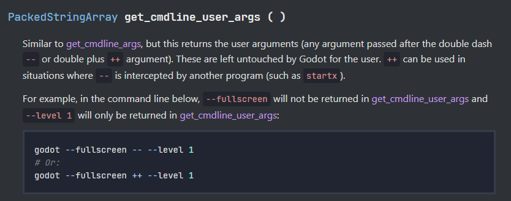
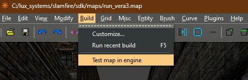
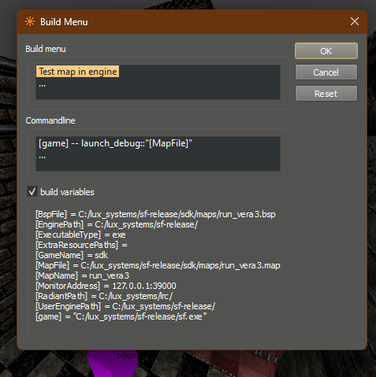

Building from Map Editors
Much like idTech engine games, it's possible to build and launch directly into a map from NetRadiant Custom and TrenchBroom alike. This can be quite a helpful tool for mappers to quickly try out their creations without a lengthy startup or debug menu process.
Godot project setup example
Regardless of which map editor you use, you'll need to check for any command line arguments.

# Somewhere in a script called when your project opens. Make sure you have a
# valid reference to a FuncGodot map or create one and apply your map settings to it.
var func_godot_map: FuncGodotMap
var map_override: String
var cmd_line_args := OS.get_cmdline_user_args()
for arg in cmd_line_args:
# Example argument, with a known delimiter.
if arg.contains("launch_debug::"):
var split := arg.split("::")
# Basic input validation
if split.size != 2:
return
map_override = arg.split("::")[1]
func_godot_map.local_map_file = map_override
func_godot_map.verify_and_build()
TrenchBroom
The TrenchBroom documenation covers this part nicely.
NetRadiant Custom
NetRadiant itself provides some basic scripting for this process, defined in the gamepack folder.
The path to our default build profiles can be found in your NetRadiant gamepack folder. This is something defined in your
NetRadiantCustomGamePackConfig.
IF you haven't set this up, you'll need to first complete creating your NetRadiantCustomGamePackConfig.
We'll use an example from Sinewave's game SLAMFIRE: <path_to_radiant>\gamepacks\sfbase.game\default_build.xml.
First, in Radiant, navigate to
Build > Customize....
Here, we can see some build variables available:

<?xml version="1.0"?>
<project version="2.0">
<var name="game">"[EnginePath]sf.[ExecutableType]"</var>
<build name="Test map in engine">
<command>[game] -- launch_debug::"[MapFile]"</command>
</build>

